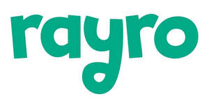

Trade Mark Journal No.2025/035 29 August 2025
UK00004220135 17 June 2025 (3,5,9,10,14,16,20,21,24,25,28,29,32,35,41)

- Class 3
- Skincare; Sunscreen; SPF; Bath soaps; Lotions; Moisturiser; Balms (non-medicated); Deodorant; Lip balms (non-medicated); Cleanser; Bath wash; Bubble bath; Shower gel; Laundry stain removers; Cleaning preparations; Non-medicated skincare preparations; Sun protection preparations; Cosmetic creams and lotions; Essential oils; Non-medicated toothpaste; Non-medicated mouthwash; Wipes impregnated with cosmetics; Bath bombs and bath salts; Skincare sticks; Sunscreen stick; Sleeping stick.
- Class 5
- Medicated balms; Soothing sticks; First aid kits; Plasters; Sunscreen stickers; Arnica; Healing cream; Healing balm; Breathing aids; Teething-friendly consumables (medicated); Baby food.
- Class 9
- Mobile apps; Digital games; Downloadable content; E-books.
- Class 10
- Teething toys; Breathing aids.
- Class 14
- Kid's jewellery; Charms.
- Class 16
- Notebooks; Stickers; Colouring books; Printed books; Storybooks; Comics; Activity books.
- Class 20
- Pillows; Kid's furniture; Sleep pods.
- Class 21
- Applicators; Brushes; Containers; Bath sponges; Lunchboxes; Tins.
- Class 24
- Blankets; Towels; Swaddles.
- Class 25
- Apparel; Hats; Sleepwear; Kidswear .
- Class 28
- Toys; Plushies; Puzzles; Activity kits; Cuddly toys; Crafts; Vehicles (toy); Dolls; Figurines; Grooming kits for kids; Kids’ tents; Play dens; Pop-up forts; Sleeping bags; Outdoor chairs; Outdoor tables; Outdoor gear.
- Class 29
- Snack packs; Crisps; Dried fruit; Fruit.
- Class 32
- Juices; Kids' drinks; Squash; Probiotic drinks; Fizzy drinks; Bottled water; Canned water.
- Class 35
- Business management; Brand licensing; Influencer representation.
- Class 41
- Kids' shows; Workshops.
KIND & KID LONDON LTD